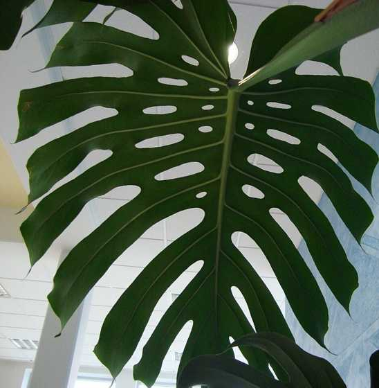
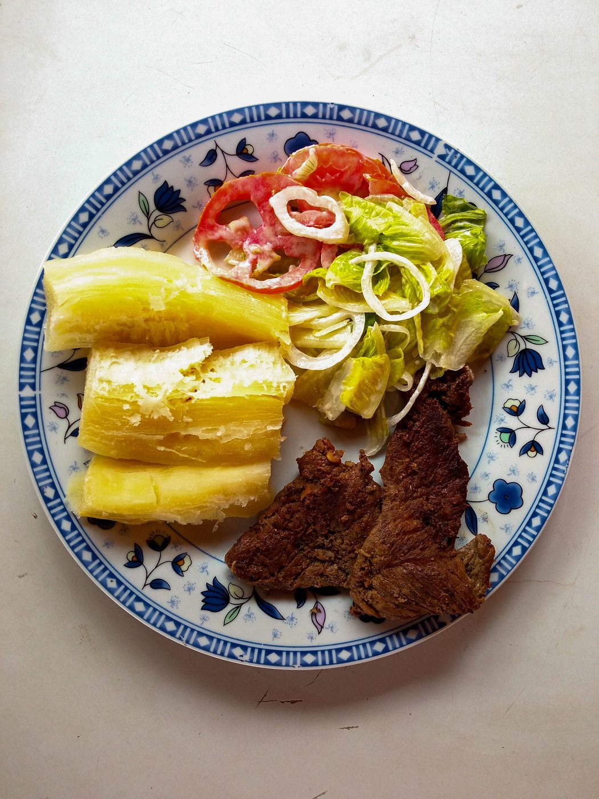
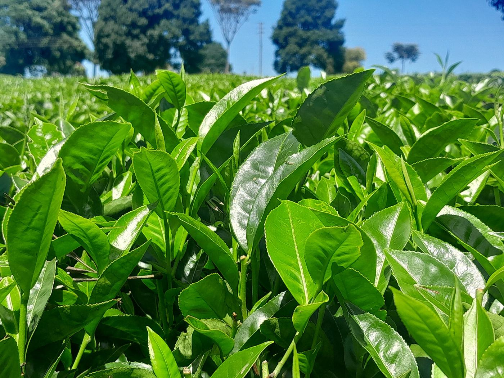
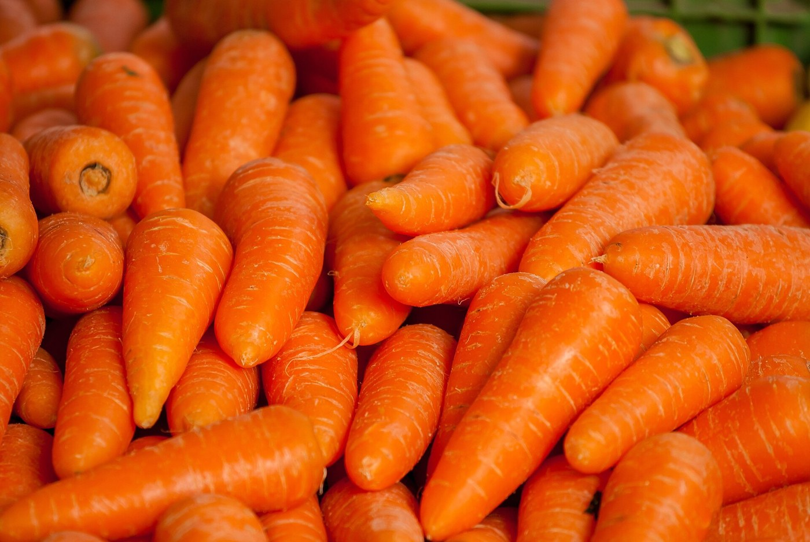
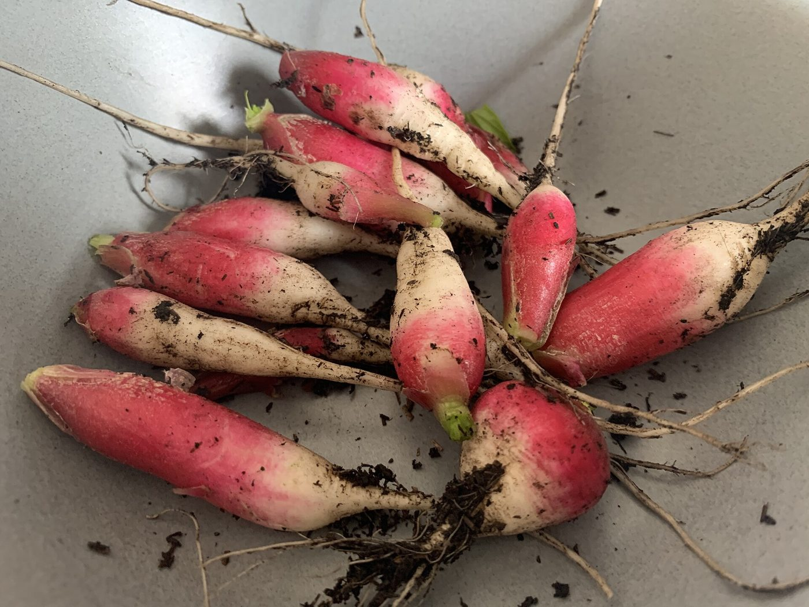
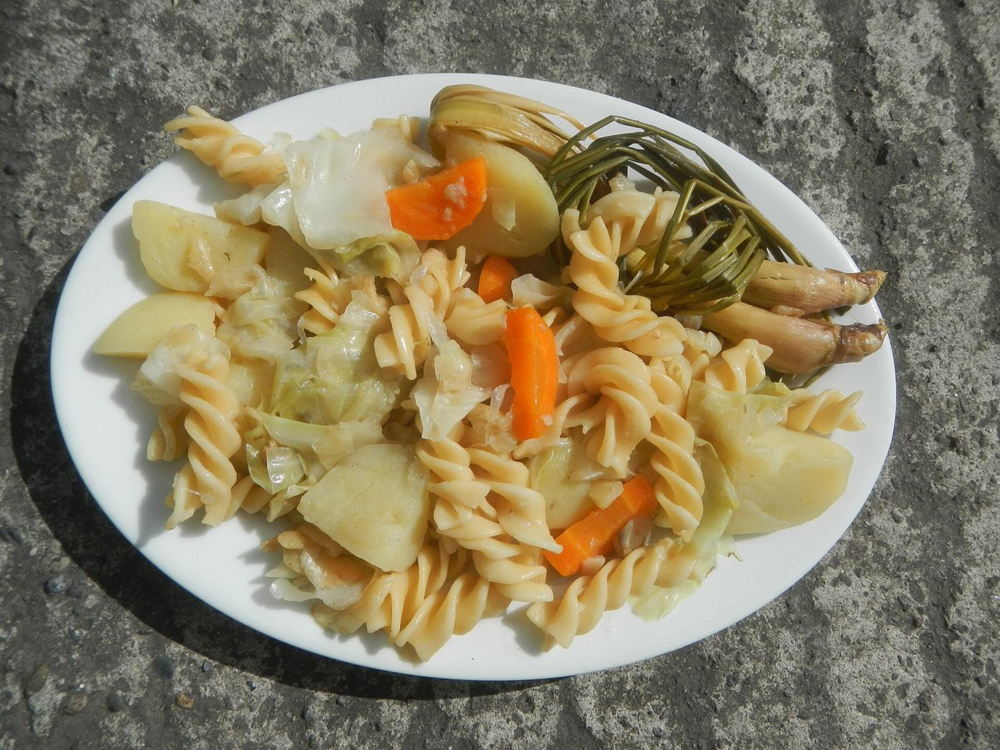

秋田県大仙市・大曲上栄町のカフェ
木のぬくもりの中で、
野菜とお茶をゆっくりと。
カフェOWLは、野菜を中心にしたランチと、お茶・ハーブティー、自家焙煎コーヒーを楽しめる大曲のカフェです。
ABOUT
昼のあいだ、ひと息つくための止まり木。
お店のInstagramには、野菜を中心にしたランチ、お茶、ハーブティー、自家焙煎コーヒーを提供していることが紹介されています。また、店舗紹介サイトでは、木の素材が美しい店内でゆっくり過ごせるカフェとして紹介されています。営業は昼間で、11:30から(ラストオーダー16:00)と案内されています。
店名「OWL」(フクロウ)に込められた意味は確認できていません。このページでは、昼のあいだ羽を休める止まり木のようなカフェ、という見立てを、制作側のイメージとして使っています。
情報源: Instagram / ハモニ(店舗紹介ページ)


MENU
野菜のランチと、一杯のお茶やコーヒー。
お店の紹介で確認できた範囲のご案内です。具体的なメニュー内容と価格は準備中です。

野菜が主役のランチ
お店の紹介によると、野菜を中心にしたランチが用意されています。内容・価格は準備中です。

紅茶・ハーブティー
お茶やハーブティーも案内されています。種類・価格は準備中です。

自家焙煎コーヒー
自家焙煎のコーヒーが案内されています。写真はイメージです。価格は準備中です。

パフェなどの甘いもの
第三者の投稿に、マンゴーやチョコレートのパフェの記載があります(2023年時点)。現在の提供は準備中です。







定休日 準備中 / 電話 準備中 / 価格 準備中
VOICE
口コミ(イメージ例)
以下は制作側が作成したイメージ例で、実在のお客様の声ではありません。
野菜がたっぷりで、食べ終わるころには体がほっとしました。木のテーブルが落ち着きます。
食後に温かいお茶をいただきながら、窓の外をぼんやり眺めて過ごしました。急がなくていいお店です。
コーヒーの香りがよく、ひとりでも入りやすい雰囲気でした。また昼に寄りたいです。
PHOTO CREDITS
写真について
このページの写真はフリー素材(撮影地は日本国外・不明のものを含む)のイメージで、カフェOWLの実際の店内・料理ではありません。
- images/window.jpg : 「Window in a cafe in San Gimignano (02182)2」 / Rhododendrites / CC BY-SA 4.0(縮小・加工あり)
- images/wood.jpg : 「Weatherworn top of wooden table」 / W.carter / CC0 1.0(縮小・加工あり)
- images/plate.jpg : 「Almuerzo criollo.jpg」 / Muago / CC0(縮小・加工あり)
- images/pasta.jpg : 「0811Potatoes, carrots and cabbage with fusilli in lemon grass casserole 02.jpg」 / Judgefloro / CC0(縮小・加工あり)
- images/carrots.jpg : 「Fresh Carrots.jpg」 / Yerson Retamel / CC0(縮小・加工あり)
- images/radish.jpg : 「Confinement 2020 - modeste première récolte de radis.jpg」 / Benoît Prieur / CC0(縮小・加工あり)
- images/pepper.jpg : 「Red bell pepper on a plate 2017 A.jpg」 / Fructibus / CC0(縮小・加工あり)
- images/basil.jpg : 「Ocimum pupuraceus - Jardim Botânico de Brasília - DSC09662.JPG」 / Daderot / CC0(縮小・加工あり)
- images/tealeaf.jpg : 「Tea Leaves. Also known as Camellia Sinensis.jpg」 / VickyOmondi / CC0(縮小・加工あり)
- images/teapot.jpg : 「Porcelain teapot on windowsill (Unsplash)」 / Nathan Fertig / CC0 1.0(縮小・加工あり)
- images/bowl.jpg : 「Light green ceramic bowl 1」 / W.carter / CC BY-SA 4.0(縮小・加工あり)
- images/mug.jpg : 「Bright turquoise mug sits on a wooden table by the window」 / Shixart1985 / CC BY 2.0(縮小・加工あり)
- images/latte.jpg : 「Pumpkin latte Tullys.jpg」 / さえぼー / CC0(縮小・加工あり)
- images/monstera.jpg : 「Monstera deliciosa DSC02605」 / Smatu / CC BY-SA 4.0(縮小・加工あり)